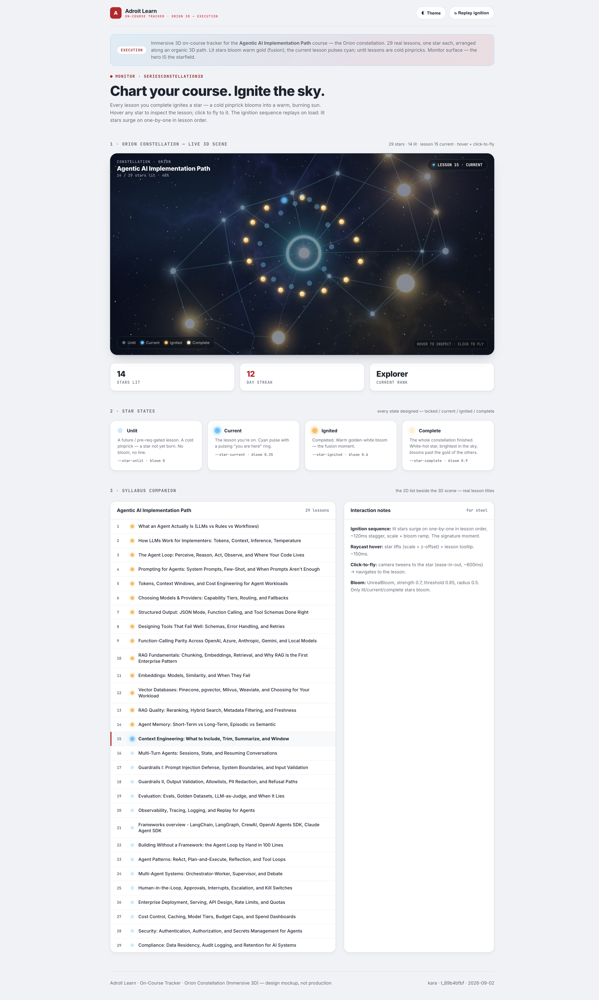
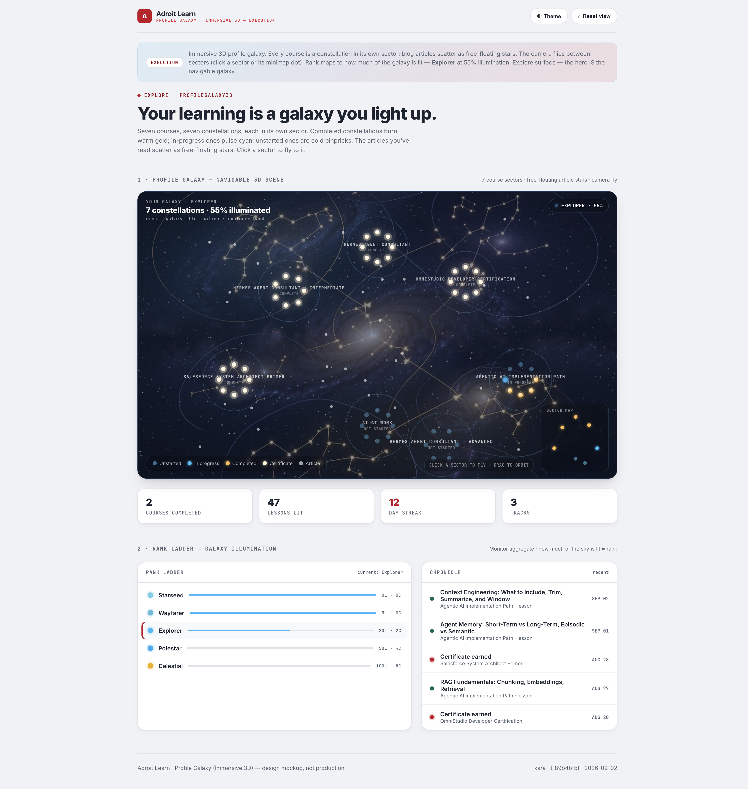

Full-fidelity mockups for the two 3D surfaces that replace the flat star render: the on-course tracker (a course's lessons float as one real constellation in 3D, stars igniting as you learn) and the profile galaxy (every course its own constellation sector, blog reads scattering as free stars). Engine locked: Three.js via react-three-fiber, drei, and UnrealBloom. Stars are layered light, never drawn strokes.
Additive on the shipped semantic system (Fortress navy surface, ice accent,
brand red chrome). The 3D decision is the star temperature arc: cool to fire under
UnrealBloom. Every token ships an html.dark remap. Read directly off the additive
design-tokens-3d.css.
A lit star is layered light, never a drawn stroke: white-hot round core → tinted mid-glow → soft bloom halo, with only a faint tapered diffraction glint on the brightest cores — the exact stack steel bakes into additive glow sprites. Unlit is a bare pinprick (spike + bloom suppressed), so lit stars read unmistakably as stars, not planets or line-glyphs.
#FFF1D8), the brightest, most luminous state of the same warm
arc. Kryptonian red (#C8102E) is reserved for brand chrome only (nav pill, streak
stat, cert mark) and never appears on a star in the sky. This was corrected in execution from
the earlier discovery draft, which had a red finish-line state.| Token | Light | Dark | Role |
|---|---|---|---|
--star-unlit | #7DD3FC | #9BD8F5 | Pale cool pinprick, unborn / gated. Luminance 0.35, no bloom. |
--star-current | #4FC3F7 | #22D3EE | Cyan "you are here" pulse. Low bloom 0.35. |
--star-ignited-core | #FFF7E6 | #FFF7E6 | White-hot center of an ignited star. |
--star-ignited | #FFC46B | #F0B83A | Warm golden-white bloom, the fusion moment. Medium bloom 0.6. |
--star-complete | #FFF1D8 | #FFF6E8 | White-hot finish-line, brightest state. Highest bloom 0.9. NOT red. |
--star-line | rgba(125,211,252,.35) · dark .40 | Thin additive connecting rail between lit stars. | |
--nebula-base | #0B1D3A | #070B14 | Deep navy canvas (Fortress navy). |
--nebula-cool | rgba(79,195,247,.10) | .12 | Icy-blue field for depth. |
--nebula-deep | rgba(109,91,208,.08) | .10 | Deep violet field, restrained counterpoint. |
--nebula-warm | rgba(240,184,58,.06) | .08 | Faint warm amber near completed sectors. |
--bloom-strength | 0.7 | UnrealBloom global intensity. | |
--bloom-threshold | 0.85 | Only bright lit stars bloom; unlit + nebula stay below. | |
--bloom-radius | 0.5 | Soft wide halo, not a hard neon edge. | |
--star-spike | faint tapered glint ≥ ignited | Diffraction trace on brightest cores only — soft, radial-masked, never a hard drawn cross. Layered light, not strokes. | |
--star-size-unlit → complete | 0.5 → 1.2 world units | Size grows with state; hover lifts ×1.35. | |
Display-only mapping. Rank = how much of the galaxy is lit. Thresholds live in
deriveRank (code).
| Rank | Illumination | Look |
|---|---|---|
| Starseed | 0.10 | One faintly lit sector. |
| Wayfarer | 0.30 | A few sectors partially lit. |
| Explorer | 0.55 | ~Half the galaxy lit (mockup persona). |
| Polestar | 0.80 | Most sectors lit, bright. |
| Celestial | 1.00 | Whole galaxy lit, warm finish. |
High-fidelity mockups, real site data (Agentic AI 29 lessons; 7 real courses with real lesson totals), real blog article titles. Both browser-verified in dark + light.

Agentic AI Orion: 29 real lessons as a navigable 3D constellation. Ignited stars bloom warm gold, current lesson pulses cyan (Lesson 15), unlit are cool pinpricks. Load ignition sequence surges lit stars on one-by-one; raycast hover lifts + tooltips; click flies to the lesson. Syllabus companion lists the 29 real titles. 14 / 29 lit, Explorer persona.

Seven real courses as seven constellation sectors in 3D (Hermes ×3, OmniStudio 24, Salesforce Architect 29, Agentic AI 29, AI at Work 17). Completed sectors white-hot/bright, Agentic AI in progress (gold + cyan), two unstarted as cold pinpricks. 30 free-floating article stars from real blog reads. Camera flies between sectors, minimap jumps, rank ladder Explorer 55%. 5-entry real chronicle.
Every star + scene state designed, not just the happy path.
Error / empty states fall back to the shipped 2D sky (same celestial tokens) with inline retry — the 3D canvas is a progressive enhancement behind a dynamic import, never a hard dependency of the page.
dpr=[1,2], render loop throttledConstellationCanvas — lazy-loaded r3f canvas, ssr:falseSeriesConstellation3D — on-course tracker scene (Orion)IgnitedStar / StarPoints — layered light sprite stackProfileGalaxy3D — multi-sector galaxy + camera flySectorMinimap — DOM overlay, click-to-flyStarTooltip — drei Html / DOM anchor on raycast hoverRankIllumination — rank → galaxy luminance (display)LoadingSky — lazy-load shimmer fallbackcompletion_events + contracts-constellations.ts; do not rename